기상기사 (2007-03-04 기출문제)
1과목: 기상관측법
1. 고정된 고도각에서 전체 360°방위각으로 레이더를 스캐닝하여 표출하는 반사도 지시방법은?
- RHI
- VAD
- PPI
- VVP
(정답률: 알수없음)

2. 고도별 바람 방향과 세기를 표현한 것은?
- 호도그래프 (Hodograph)
- 노모그래프 (Nomograph)
- 단열선도 (Skew T - Log P diagram)
- 풍배도 (Wind-Rose)
(정답률: 알수없음)
3. Skew T - Log P 선도에서 알 수 없는 요소는?
- 기온(고도별), 혼합비
- 대류응결고도
- 대기안정도, 기압
- 강수량
(정답률: 알수없음)
4. 철관 지중 온도계는 어느 정도의 깊이 이상 되는 지중 온도를 관측하는데 사용하는가?
- 0.5m
- 1m
- 3m
- 5m
(정답률: 알수없음)
5. 고층기상 관측전문(TTAA)에서 88 PPP와 가장 관계가 깊은 것은?
- 구름
- 권계면
- 최대풍
- 시정
(정답률: 알수없음)
6. 일조(日照)에 대한 설명 중 틀린 것은?
- 일조율(日照率)이란 하루(24시간)동안 태양이 실제 비친 시간의 백분율이다.
- 가조시간(可照時間)은 구름 등의 방해 없이 일출에서 일몰까지의 천체운행으로 빛이 비칠 수 있는 시간이다.
- 일조시간(日照時間)이란 구름, 안개 등에 의해 차단되지 않고 실제 태양이 비친 시간을 뜻한다.
- 일조율은 가조시간에 대한 일조시간의 비(比)의 백분율로 나타낸다.
(정답률: 알수없음)
7. 다음 중 최고ㆍ최저온도계에 대한 설명으로 틀린 것은?
- 분리형 최고온도계는 수은을 이용하여 유리봉으로 유점을 만들어 기온이 상승할 때 일방통행으로 상승하게만 만든 것이 주 원리이다.
- 분리형 최저온도계는 알코올 속에 지표를 넣어두어 지표가 표면장력에 의하여 끌려 내려오게 한 것이 원리이다.
- 겸용 최고ㆍ최저온도계는 기온의 상승∙강시지표의 한쪽 방향으로만 움직이게 한 것이 주원리이다.
- 분리형 최저온도계의 복도(復度, reset)는 내려오지 않는 수은을 수은사 부분을 잡고 강제로 강하게 내려 뿌려서 현재 기온으로 한다.
(정답률: 알수없음)
8. 어제 09시 이후 비가 5.2mm 내렸다. 오늘 아침 09시에 증발량을 측정하였더니 어제 측정시의 증발계의 수량보다 0.2mm 줄었다. 증발 관측 값의 기록은?
- 5.0
- 5.4
- (5.0)
- (5.4)
(정답률: 알수없음)
9. 10가지 기본운형에 속하지 않는 것은?
- 권층운
- 층적운
- 적난운
- 파상운
(정답률: 알수없음)
10. 정시 관측에 있어서 원칙적인 기온관측의 시각은?
- 정시 1분 전
- 정시
- 정시 1분 후
- 정시 10분 후
(정답률: 알수없음)
11. 수은기압계의 시도에서 현지기압(現地氣壓)을 산출할 때 보정을 하지 않아도 되는 것은?
- 기차보정
- 온도보정
- 중력보정
- 습도보정
(정답률: 알수없음)
12. 다음 중 풍향 표시가 바르게 된 것은?
- ENE
- NEN
- SWS
- SEE
(정답률: 알수없음)
13. 습기흡수로 인한 물리적 차원(physical dimension)의 변화에 의존하여 습도를 측정하는 습도계가 아닌 것은?
- 모발 습도계(hair hygrometer)
- 토션 습도계(torsion hygrometer)
- 건습구 습도계(psychrometer)
- 골드 비터막 습도계(goldbeater's skin hygrometer)
(정답률: 알수없음)
14. 고층기상 관측전문에서 “hhh"가 나타내는 것은?
- 표준등압면의 고도
- 풍향
- 기온
- 풍속
(정답률: 알수없음)
15. 복사이론에서 사용되는 langley의 단위를 바르게 표시한 것은?
- 1 gram-calorie/cm
- 1 gram-calorie/cm2
- 1 gram-calorie/cm3
- 1 gram-calorie
(정답률: 알수없음)
16. 다음 중 대기 전상(electrometeors)인 것은?
- 코로나(corona)
- 어광(glory)
- 극광(polar aurora)
- 비숍환(Bishop's ring)
(정답률: 알수없음)
17. 백엽상에 설치하지 않아도 되는 측기는?
- 건구온도계
- 습구온도계
- 최저온도계
- 기압계
(정답률: 알수없음)
18. 항공기상 관측 전문에서 21RERA가 뜻하는 것은?
- 비가 오다 그쳤다.
- 비가 계속 온다.
- 비가 강하게 온다.
- 비가 약하게 온다.
(정답률: 알수없음)
19. 단파복사(short-wave radiation)로 취급하는 파장 범위는?
- 0.004 ~ 0.01㎛
- 0.04 ~ 0.1㎛
- 0.4 ~ 1.0㎛
- 4.0 ~ 10.0㎛
(정답률: 알수없음)
20. 습도를 관측할 때 이용하는 일반적인 원리들 중 적합하지 않은 것은?
- 열역학 원리
- 흡습성 물질의 팽창수축 원리
- 습도에 따른 전기저항 변화 원리
- 습도에 따른 모세관 현상 원리
(정답률: 알수없음)
2과목: 대기열역학
21. 23°F의 절대온도는 약 몇 K인가?
- 289K
- 257K
- 278K
- 268K
(정답률: 알수없음)
22. 정적비열(Cv), 정압비열(Cp)에 관한 관계식 중 옳은 것은? (단, R은 기체 상수이다.)
- Cp = Cv/R
- Cp = Cv + R
- Cv = Cp + R
- Cv = Cp/R
(정답률: 알수없음)
23. 위단열변화(Pseudo-adiabatic change)에 대해 잘못 기술된 것은?
- 이 변화에서는 수적은 존재하지 않으므로 hail stage는 있을 수 없다.
- 이 변화는 비가역(非可逆) 과정이 특징이다.
- 상승한 공기가 이 변화를 거쳐 제자리로 돌아올 때는 고온(高溫)으로 된다.
- 습윤공기의 단열변화에 대해서는 이 변화를 적용시켜 4단계(stage)로 구분하여 설명된다.
(정답률: 알수없음)
24. 그림은 포화수증기압과 온도의 관계를 나타내고 있다. 이 곡선의 기울기를 나타내는 식은?
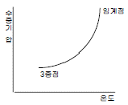
- Clausius-Clapeyron 방정식
- 상태방정식
- Poisson 방정식
- Laplace 방정식
(정답률: 알수없음)
25. 다음 중 포화단열팽창 과정에서 보존되는 것은?
- 상대습도
- 수증기압
- 혼합비
- 온위
(정답률: 알수없음)
26. 공기가 상승하여 응결고도에 이르는 동안, 노점온도 (露店溫度, 이슬점온도)의 변화에 대한 아래의 설명 중 틀린 것은?
- 상승하는 동안은 등압(等壓)적이라 변함이 없다.
- 상승하는 동안은 변압(變壓)적이라 변화한다.
- 상승하는 동안 수증기압이 기온에 따라 변함으로 당연히 노점온도가 변화한다.
- 상승하는 동안 노점온도의 변화율(노점온도감율)은 100m 당 약 0.17℃ 정도씩 감소한다.
(정답률: 알수없음)
27. 다음 중 대기 과학적 온도(기상학적 온도), 즉 온도의 단위를 갖지 않는 것은?
- 습구온도(濕球溫度)
- 혼합비(混合比)
- 다방온위(多方溫位)
- 가온도(假溫度)
(정답률: 알수없음)
28. 습윤공기의 상승과 온도변화를 4단계로 표시한 그림에서 성우급(成雨級)은?
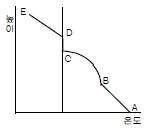
- AB
- BC
- CD
- DE
(정답률: 알수없음)
29. Γ를 주위대기의 기온감률, Γd 건조단열감율, N을 부력진동수, θ를 온위, 를 연직좌표라 할 때 다음 중 건조대기의 불안정을 표시한 것은?
- dθ/dz＞0
- Γ＜Γd
- N2 ＜ 0
- dθ/dz= 0
(정답률: 알수없음)
30. 지면근처에서의 건조단열감율 값은?
- 약 1℃/100m
- 약 0.65℃/100m
- 약 0.5℃/100m
- 약 0.3℃/100m
(정답률: 알수없음)
31. 절대습도의 단위는?
- %
- g/m3
- g/kg
- g
(정답률: 알수없음)
32. 다음 중 등온위선이 단면도에서 가장 조밀한 곳은?
- 고기압 중심부
- 대류불안정대
- 전선대
- 기단 중심부
(정답률: 알수없음)
33. 다음 중 단위질량당 엔트로피의 차원은? (단, L은 길이, T는 시간, θ는 온도의 차원이다.)
- [L2T-2θ-1]
- [LT-2θ-1]
- [L2T-1θ-1]
- [L2T-2θ-2]
(정답률: 알수없음)
34. Tephigram에서 가로축과 세로축이 바르게 연결된 것은?
- 가로축 - 온도, 세로축 - 압력
- 가로축 - 온도, 세로축 - 온위
- 가로축 - 부피, 세로축 - 압력
- 가로축 - 온위, 세로축 - 압력
(정답률: 알수없음)
35. 건조단열감율을 Γd, 포화단열감율을 Γs, 실제대기 기온감율을 Γ라 할 때, 절대안정 조건은?
- Γ＞Γd
- Γ＞Γs
- Γs＜Γ＜d
- Γ＜Γs
(정답률: 알수없음)
36. 어떤 고도에서의 기압은 그 고도 위에 놓여 있기 전 대기의 무게와 같다는 것을 나타내는 식은?
- 상태방정식
- 정역학방정식
- 연속방정식
- 열역학에너지방정식
(정답률: 알수없음)
37. 다음 중 상태변수가 아닌 것은?
- 압력
- 부피
- 열
- 온도
(정답률: 알수없음)
38. 일정한 기압하의 공기에 대해서, 노점온도(Td), 온도(T), 습구온도(Tw)의 크기순이 옳게 표시된 것은?
- Td＜Tw＜T
- T＜ Tw＜Td
- Tw＜Td＜T
- Td＜ T＜Tw
(정답률: 알수없음)
39. 건조단열선이 직선으로 나타나는 단열선도는?
- Clapeyron 선도
- Tephigram
- Emagram
- Skew T-log P 선도
(정답률: 알수없음)
40. 온위(potential temperature : θ)를 구하는 식으로 맞는 것은? (단, k는 R/Cp 이다.)
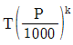
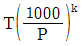
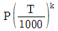
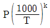
(정답률: 알수없음)
3과목: 대기운동학
41. 순압대기에 관한 설명 중 맞는 것은?
- 연직 풍속 shear가 있다.
- 지균풍은 고도와 관계없이 일정하다.
- 밀도는 기압과 온도만의 함수이다.
- 등밀도면과 등압면이 일치하지 않는다.
(정답률: 알수없음)
42. 지균풍에 대한 설명 중 틀린 것은?
- 등압선에 나란하게 부는 바람이다.
- 코리올리힘과 기압경도력이 같을 때, 상층일수록 지균풍은 강하다.
- 기압 경도력과 공기의 밀도가 같을 때, 코리올리인자의 크기가 클수록 지균풍은 강하다.
- 종관규모의 수평바람은 거의 지균풍이다.
(정답률: 알수없음)
43. 일반적으로 알려진 이론과 관측의 토대에 의한 대기순환의 에너지 흐름은?
- 평균위치에너지 → 에디위치에너지 → 에디운동에너지 → 평균운동에너지
- 평균위치에너지 → 평균운동에너지 → 에디위치에너지 → 에디운동에너지
- 평균위치에너지 → 에디위치에너지 → 평균운동에너지 → 에디운동에너지
- 평균위치에너지 → 에디운동에너지 → 에디위치에너지 → 평균운동에너지
(정답률: 알수없음)
44.
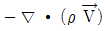
의 물질적 의미는? (단, ρ는 공기밀도, 는 속도 벡터를 표시한다.)
는 속도 벡터를 표시한다.)- 질량경도를 나타낸다.
- 단위체적당 질량 유입량을 나타낸다.
- 속도 발산을 의미한다.
- 속도 경도를 나타낸다.
(정답률: 알수없음)
45. 다음 중 플럭스가 높이에 따라 일정한 층은?
- 지표층(surface layer)
- 잔여층(residual layer)
- 혼합층(mixed layer)
- 안정경계층(stable boundary layer)
(정답률: 알수없음)
46. 한 등압면에서 기류가 수렴 지역을 통하여 흐를 때 나타나는 현상은?
- 절대소용돌이도가 증가한다.
- 기압이 상승한다.
- 층후가 증가한다.
- 풍속이 약해진다.
(정답률: 알수없음)
47. 지상 저기압의 중심으로 바람이 수렴하는 주된 이유는?
- 전향력
- 전선
- 마찰
- 기온분포
(정답률: 알수없음)
48. 대기가 순압대기라고 할 때 공기덩어리가 적도에서 극쪽으로 이동할 경우 나타나는 현상은?
- 상대와도는 감소한다.
- 상대와도는 증가한다.
- 절대와도는 감소한다.
- 절대와도는 증가한다.
(정답률: 알수없음)
49. 연 평균 증발량이 가장 큰 위도대는?
- 적도
- 북위 10도
- 북위 20도
- 북위 30도
(정답률: 알수없음)
50. 대기의 대순환과 관련 된 사항 중 틀린 것은?
- 지구의 불균등한 복사 가열로 순환이 일어난다.
- 해륙분포의 지역적 차이로 인한 온도의 불균형으로 순환이 일어난다.
- 편서풍 파동은 대기의 운동에너지를 유효위치 에너지로 전환시키는데 기여한다.
- 편서풍 파동은 열과 각운동량을 고위도로 수송한다.
(정답률: 알수없음)
51. 온위(x, y, Θ)좌표계(isentropic coordinates)에서 수평기압 경도력을 표시한 것은? (단, Θ는 온위, ρ는 공기밀도, P는 기압, 는 지오포텐샬, R은 기체상수, Cp는 정압비열, T는 온도,
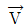
는 바람을 나타내다.)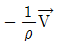
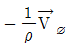
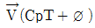
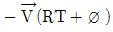
(정답률: 알수없음)
52. 적도지방에서 극지방으로 운송되는 에너지 중 현열에 의한 운송이 차지하는 양은?
- 1/10
- 1/5
- 1/3
- 1/2
(정답률: 알수없음)
53. 정적으로 안정한 지표층 대기에 난류가 형성되면 열은 어떻게 수송되는가?
- 위에서 아래로
- 아래에서 위로
- 수평방향으로
- 수송이 이루어지지 않는다.
(정답률: 알수없음)
54. 경계층난류에 대한 설명 중 틀린 것은?
- 경계층난류는 대류적불안정 또는 시어불안정에 의해 생성된다.
- 난류에너지의 기계적 생성은 평균속도의 연직 경도에 비례한다.
- 정적안정도가 커질수록 난류가 생성되는 층의 깊이는 비례한다.
- 경계층이 정적으로 불안정하면 리차드슨 수는 음의 값을 갖는다.
(정답률: 알수없음)
55. 다음 중 마찰의 영향으로 볼 수 없는 것은?
- 풍속을 감소시킨다.
- 풍향이 저기압쪽으로 편향한다.
- 고기압에서 발산이 나타난다.
- 해륙풍이 발생한다.
(정답률: 알수없음)
56. 다음 중 남북 방향의 대기 대순환에서 가장 뚜렷한 부분은?
- 극세포
- 페렐세포
- 해들리세포
- 적도세포
(정답률: 알수없음)
57. 지구규모운동에서 에디위치에너지는 어떠한 메커니즘에 의하여 증가되는가?
- 잠열의 방출
- 현혈의 flux의 수렴
- 각운동량의 증가
- 현혈의 증가
(정답률: 알수없음)
58. Surface layer의 역학적 Ekman layer에 대한 일반적인 설명으로 틀린 것은?
- Surface layer에서는 에디의 크기가 높이에 비례한다.
- Ekman layer에서는 에디의 크기가 높이에 따라 일정하다.
- Surface layer에서는 수평 마찰 stress가 높이에 따라 거의 일정하다.
- Ekman layer에서는 바람이 log적으로 증가한다.
(정답률: 알수없음)
59. 일반적으로 마찰층의 상부는 어느 고도에 위치하는가?
- 300 ~ 500m
- 1000 ~ 1500m
- 2000 ~ 3000m
- 4000 ~ 5000m
(정답률: 알수없음)
60. Rossby에 의한 장파이동속도(C)는 다음과 같이 나타낸다. 이 때 장파가 서쪽에서 동쪽으로 이동하는 경우에 해당 하는 것은? (단, U는 평균대상풍속, L은 파장, β는 코리올리인자의 위도 변화)
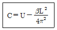
- U ＞ C ＞ 0
- U ＞ C = 0
- U ＞ 0 ＞ C
- C ＞ 0 ＞ U
(정답률: 알수없음)
4과목: 기후학
61. 수륙분포가 기후인자로서의 역할을 하는 기본적인 이유로 가장 거리가 먼 것은?
- 비열차
- 전도율차
- 열흡수율차
- 일사량차
(정답률: 알수없음)
62. 다음 잠열 수송의 방향을 나타낸 것 중 틀린 것은?
- 적도 → 아열대 고압대
- 아열대 고압대 → 중위도 저압대
- 중위도 저압대 → 극지방
- 해양 → 육지
(정답률: 알수없음)
63. 다음 중 지구상의 식생분포와 가장 밀접한 기후요소는?
- 기온과 바람
- 바람과 강수량
- 강수량과 기온
- 기압과 상대습도
(정답률: 알수없음)
64. 실효습도(實效濕度)는 다음 중 어느 것에 많이 이용되는가?
- 대기 중의 수증기량을 표시하는 경우
- 실내 공기의 습도를 나타내는 경우
- 인체에 실제 감각되는 습기를 표시하는 경우
- 목재의 건조상태를 표시하는 경우
(정답률: 알수없음)
65. 1816년 여름이 없는 해(Year without summer)의 직접적인 원인은?
- 인도네시아 Tambora 화산 폭발
- 적도 엘니뇨 현상
- 적도 라니냐 현상
- 상층 대기 흐름의 저지(blocking)
(정답률: 알수없음)
66. 후빙기에 있었던 기후의 최적기(climate optimum)에 대한 설명 중 틀린 것은?
- 후빙기 고온기(postglacial hypsithermal age)라고 부른다.
- 현재의 연평균 기온보다 1 ~ 3℃ 높았다.
- 약 6,000년 전의 기후이다.
- 초기 구석기 시대에 해당한다.
(정답률: 알수없음)
67. 20세기 이후 인간 활동에 의한 기후 변화의 특징이 아닌 것은?
- 대류권 평균 기온의 상승과 성층권 평균 기온의 하강
- 오존층의 파괴
- 에어로졸에 의한 기온 상승
- 건조지역 면적의 증가
(정답률: 알수없음)
68. 연평균 기온 15℃, 가장 더운 달 평균 기온 26℃, 가장 추운 달 평균기온 5℃, 연 강수량1440mm, 최다 월 평균 강수량 250mm, 최소 월평균 강수량 600mm인 제주지방은 쾨펜(Köpen)의 기후 구분에 의하면 어디에 속하는가?
- Cfa
- Csa
- Cwa
- Dwb
(정답률: 알수없음)
69. 소빙기(Little ice age)로 분류되는 기간은?
- A.D. 1,000 ~ 1,300 년대
- A.D. 1,400 ~ 1,800 년대
- B.C. 8,000 ~ 6,000 년대
- B.C. 1,800 ~ 1,400 년대
(정답률: 알수없음)
70. 다음 중 지구의 평균 행성 알베도(albedo)로 가장 적합한 것은?
- 20 ~ 25%
- 30 ~ 35%
- 40 ~ 45%
- 50 ~ 55%
(정답률: 알수없음)
71. 대륙도(大陸度)를 나타내는 다음 식 중 R은?
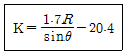
- 연교차
- 일교차
- 온량지수
- 추위지수
(정답률: 알수없음)
72. 열섬(heat island)에 대한 설명 중 틀린 것은?
- heat island는 도시 내의 열방출로 인해 발생한다.
- heat island는 도시 내의 오염물질을 잘 확산시킨다.
- heat island로 인해 중심지는 주변지역에 배해 약한 저기압을 형성한다.
- heat island는 강풍이 불 경우 잘 나타나지 않는다.
(정답률: 알수없음)
73. 기후 변화의 원인에 대한 학설이 잘못 연결된 것은?
- G.C.Simpson - 태양활동변화
- M.Milankovitch - 화산활동
- O.Petterson - 조석설
- H.C.Willett - 대기대순환
(정답률: 알수없음)
74. 위도 30 ~ 40도 사이의 대륙 서안에는 여름이 몹시 건조 한 기후가 나타난다. 이 기후의 특색은 건조기와 강우기가 교체되는 것이며, 열대사막기후와 서안해양성기후의 중간 지대에 위치한다. 이 기후는?
- 서안기후
- 아열대 하계건조기후
- 지중해성기후
- 스텝기후
(정답률: 알수없음)
75. 기온의 연교차란 (A)와 (B)의 차를 말한다. 다음 중 A, B에 들어갈 내용으로 알맞은 것은?
- A : 최난월 극 고기온, B : 최한월 극 저기온
- A : 최난월 일 최고 기온의 평균, B : 최한월 일 최저 기온의 평균
- A : 최난월 일 평균 기온의 평균, B : 최한월 일 평균 기온의 평균
- A : 최난월 일 최고 기온의 평균, B : 최한월 일 최고 기온의 평균
(정답률: 알수없음)
76. 다음 그림은 한국의 어떤 지점의 연평균물수지를 나타내고 있다. 그림에서 D 부분은?
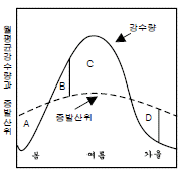
- 토양수분의 결핍
- 토양수분의 보충
- 토양수분의 과잉
- 토양수분의 이용
(정답률: 알수없음)
77. 다음 중 cP기단의 특성을 나타내는 것은?
- 근원지는 태평양이다.
- 지표면이 대기보다 차다.
- 한랭건조하다.
- 우리 나라에서는 겨울보다 여름에 빈번하다.
(정답률: 알수없음)
78. 태풍은 발생장소에 따라 그 명칭을 달리한다. 그림과 같이 북대서양 서해상에서 발생하는 태풍의 명칭은?
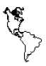
- Typhoon
- Cyclone
- Hurricane
- Willy-Willies
(정답률: 알수없음)
79. 계절풍이 불게 되는 직접적인 원인이 되는 것은?
- 대륙과 해양의 면적의 차
- 대륙과 해양의 강수량의 차
- 대륙과 해양의 일사량의 차
- 대륙과 해양의 비열의 차
(정답률: 알수없음)
80. 다음 중 연강수량이 최대인 위도대(緯度帶)는?
- 0 ~ 10°N
- 0 ~ 10°S
- 40°N ~ 60°N
- 40°S ~ 60°S
(정답률: 알수없음)
5과목: 일기분석 및 예보론
81. 다음 중 Richardson's number(리차드슨수)와 관계가 가장 깊은 것은?
- 대기의 난류
- 고기압의 이동
- 태풍의 전향
- 상층운의 형성
(정답률: 알수없음)
82. 두 개의 등압면 사이의 수직거리를 층후(層厚)라고 한다. 층후는 다음 중 어느 것과 가장 관련이 있는가?
- 기층의 평균기온
- 200hPa 기온
- 장파의 파수
- 700hPa의 포차
(정답률: 알수없음)
83. 이동 속도가 가장 바른 전선은?
- 한냉전선
- 온난전선
- 폐색전선
- 정체전선
(정답률: 알수없음)
84. 다음 중 온대성 저기압이 발생하기 쉬운 곳은?
- 고기압 내에서
- 활발한 한냉전선상에서
- 태풍 부근에서
- 정체전선상에서
(정답률: 알수없음)
85. 온난전선에 관한 설명으로 틀린 것은?
- 난기단이 한기단을 밀고 진행하는 경우 발생하는 전선이다.
- 전선이 이동함에 따라 권운 계열이 나타나기 시작하여 중층운, 하층운이 점차 증가한다.
- 전선의 기울기가 가파르고, 일기의 회복이 빠르다.
- 강수 형태는 지속적으로 내리는 것이 보통이다.
(정답률: 알수없음)
86. 전선 분석시 고려하는 사항이 아닌 것은?
- 풍향이 급변하는 곳
- 기압 변화가 적은 곳
- 등온선이 밀집되어 있는 곳
- 강수 상황과 구름 분포
(정답률: 알수없음)
87. 유선(stream line)에 관한 설명 중 틀린 것은?
- 정해진 시간에서 공기 흐름의 분포를 나타낸 것이다.
- 공기덩어리의 시간 경과에 따른 이동경로를 나타낸 것이다.
- 저위도에서는 전선 분석용으로 사용한다.
- 규모가 작은 교란 검출에 효과적이다.
(정답률: 알수없음)
88. 수직류 분포를 분석하는데 많이 쓰이는 등압면 일기도는?
- 300hPa
- 500hPa
- 700hPa
- 850hPa
(정답률: 알수없음)
89. 정지기상위성에서 보내오는 위성 영상에는 가시영상과 적외영상이 있다. 이에 대한 특성이나, 해석법 중 틀린 것은?
- 가시영상에서 구름 가운데 수분이 많으면 희게 보인다.
- 안개분석은 낮에는 가시영상으로, 밤에는 적외영상으로 한다.
- 겨울철에 시베리아 고기압의 장출로 한기가 남하하면 해양에 줄무늬 모양의 운열을 볼 수 있다.
- 야간에는 적외영상만을 예보에 활용할 수 있다.
(정답률: 알수없음)
90. 지상 기상전문에서 부호 Nh는?
- 전천운량
- 하층운량
- 중층운량
- 상층운량
(정답률: 알수없음)
91. 500hPa 일기도에서 이상 기상현상이 나타날 때의 등지오포텐셜 고도의 분포 상태는?
- Zonal 형일 때
- Menader 형일 때
- 조밀할 때
- 완만할 때
(정답률: 알수없음)
92. 지상 일기도 분석시 해안부근 관측소의 풍향이 일반풍을 대표하지 않는 경우가 많은데, 그 이유는?
- 해류 때문에
- 파고가 높기 때문에
- 해륙풍 때문에
- 해수온도의 변화가 심하기 때문에
(정답률: 알수없음)
93. 700hPa 일기도에서 강한 상승기류가 존재할 때500hPa 일기도 상에서 다음 중 어느 것을 예상할 수 있는가?
- 정(+)의 와도
- 부(-)의 와도
- 순압대기
- 기압의 능(Ridge)
(정답률: 알수없음)
94. 지상 일기도에서 기입되는 “현재일기”의 기호는 국제적으로 약 몇 가지가 있는가?
- 30가지
- 50가지
- 70가지
- 100가지
(정답률: 알수없음)
95. 자유대류고도(LFC)를 구할 때 쓰인 단열선도 상에서의 곡선은?
- 건조단열선, 등온선
- 혼합비선, 등압선
- 노점온도선, 온위선
- 습윤단열선, 상태곡선
(정답률: 알수없음)
96. 한냉전선 통과시 나타나는 대표적인 운형은?
- 권운
- 상층운
- 층운
- 적란운
(정답률: 알수없음)
97. 로스비파(Rossby wave)의 특징이 아닌 것은?
- 파의 속도는 파수의 지배를 받는다.
- 전향력에는 무관하다.
- 동서풍이 강하면 파의 속도는 증가한다.
- 파장이 길면 파는 정체할 수도 있다.
(정답률: 알수없음)
98. (문제 오류로 현재 복원중입니다. 보기 내용을 아시는 분들께서는 오류 신고를 통하여 보기 작성 부탁 드립니다. 정답은 1번입니다.)
- 복원중
- 복원중
- 복원중
- 복원중
(정답률: 알수없음)
99. 다음 중 우리나라의 여름철에 제트기류(jet stream)의 위치를 가장 잘 알 수 있는 일기도는?
- 850hPa 일기도
- 700hPa 일기도
- 500hPa 일기도
- 200hPa 일기도
(정답률: 알수없음)
100. Blocking이 나타날 때의 현상에 맞지 않는 것은?
- 편서풍이 갈라져 흐른다.
- 기압계의 이동이 빨라지기도 한다.
- 기압계의 이동이 느리다.
- 기압계의 서진현상이 나타나기도 한다.
(정답률: 알수없음)